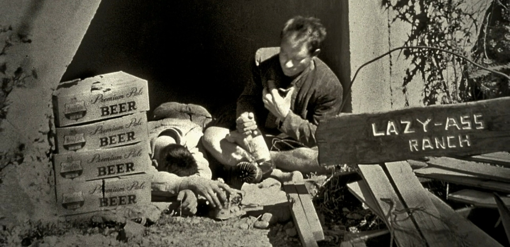
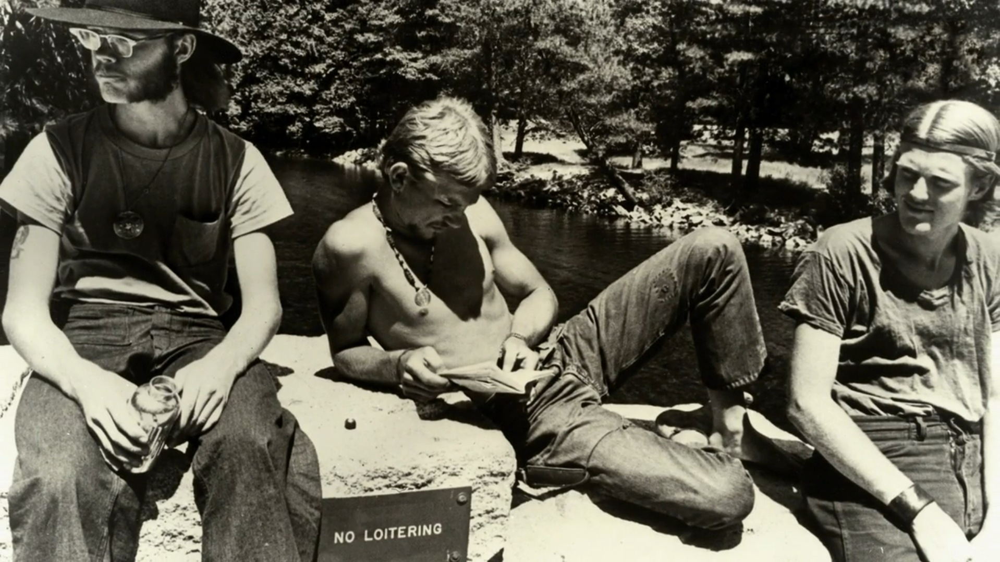

From antiwork in the USA [] to “tang ping” (躺平) or “lying flat” in China [], people are fed up with the grind. Could it be that we shouldn't live to work, but work to live? That we shouldn't serve the economy, but the economy should serve us?
I enjoy working hard, especially toward a common good, a noble goal, or simply helping a friend. The fruits of labour are immediately visible and don't merely increase the profits of some intangible entity or harmful industry. Sadly, the former types of work are rare, and the harm of the latter is everywhere: advertising, factory farming, microplastics, forever chemicals, car-centrism, gambling with pension funds, obesity, loneliness, depression, for-profit prisons, excessive symptom suppressing instead of curative medicine, wealth inequality, climate change, corruption, et cetera. Sift it all through and we get to greed, the root cause of most of society's problems.
Due to that greed we've evermore become cogs in a profit squeezing machine: unappreciated, exploited, replaceable—and, being valued as such, we behave similarly towards products or humans alike. Thanks, planned obsolescence. Thanks, Tinder. Just as Marx foretold, we're witnessing the “alienation of work” [][]. What was once more fulfilling artisanry has become become a sterile numbers game, cold. We are mere profit maximizers. However good you imagine your company, in reality it's pretense. If they were legally allowed to they'd immediately replace you, pay you less, or treat you worse if it improved their numbers. You are not family. This alienation is a major reason why as long as I can remember I've never looked forward to “work”, or, having “a job”. The same routine five days a week, seeing colleagues more than my friends, for the rest of my life… No. Not impressed. I do not want to contribute to such a cancer-like pursuit of growth. Considering the unlikeliness of stumbling upon one's dream job, i.e., vocation, there is little to no good reason to continue this kind of ruthless system. Sure, every job/vocation will have its periods of drudgery, but we can afford doing less of it. We are rich enough, short on time, and there's a vast amount of more interesting things to do.
Alas. This remains a remarkably touchy subject. People in Western “cultures”* often take pride in their work regardless whether they enjoy it or regardless of its net negative consequences as aforementioned. In such work-obsessed societies it is often considered sacrilege to be critical of work. Therefore, I'll let one of the greatest minds do some unpaid work for me. I'm sorry Albert, “you're doing it for the exposure” [].
,---,_ ,
_> `'-. .--'/
.--'` ._ `/ <_
>,-' ._'.. ..__ . ' '-.
.-' .'` `'. '.
> / >`-. .-'< \ , '._\
/ ; '-._> <_.-' ; '._>
`> ,/ /___\ /___\ \_ /
`.-|(| \_o/ \_o/ |)|`
\; \ ;/
\ .-, )-. /
/` .'-'. `\
;_.-`.____.'-.;
—ASCII art of Albert Einstein [].
“Einstein struck a more serious pose when he addressed the Caltech student body near the end of his stay. His sermon, grounded in his humanistic outlook, was on how science had not yet been harnessed to do more good than harm. During war it gave people “the means to poison and mutilate one another,” and in peacetime it “has made our lives hurried and uncertain.” Instead of being a liberating force, “it has enslaved men to machines” by making them work “long wearisome hours mostly without joy in their labor.” Concern for making life better for ordinary humans must be the chief object of science. “Never forget this when you are pondering over your diagrams and equations!”” —Albert Einstein (1879 – 1955) []
Buckminster Fuller, another intellectual paragon to boot:
“We must do away with the absolutely specious notion that everybody has to earn a living. It is a fact today that one in ten thousand of us can make a technological breakthrough capable of supporting all the rest. The youth of today are absolutely right in recognizing this nonsense of earning a living. We keep inventing jobs because of this false idea that everybody has to be employed at some kind of drudgery because, according to Malthusian-Darwinian theory, he must justify his right to exist. So we have inspectors of inspectors and people making instruments for inspectors to inspect inspectors. The true business of people should be to go back to school and think about whatever it was they were thinking about before somebody came along and told them they had to earn a living.” —Buckminster Fuller (1895 – 1983) []
Clearly, the antiwork movement is not new and not for the lazy. It's the other way around. To me, “antiwork” means striving for a society where people don't want to be lazy, a society with a vision that people deem worthy to dedicate their life to. In that respect, I consider too ambiguous the r/antiwork slogan “Unemployment for all, not just the rich!” [], however witty it may be. The unemployed or partly employed are looked down upon too often already, entirely unjustified. As long as a person does no harm, or doesn't refrain from preventing harm, then all is well. Nothing else matters besides living morally. Come on people, it's not that hard to comprehend. Don't point at each other, we have a common enemy:
“People who dismiss the unemployed and dependent as ‘parasites’ fail to understand economics and parasitism. A successful parasite is one that is not recognized by its host, one that can make its host work for it without appearing as a burden. Such is the ruling class in a capitalist society.” —Jason Read
A recent example of this antiwork/unemployment bias is the cringeworthy Fox interview with Doreen Ford, a (now former) r/antiwork moderator. It's obvious Fox did not intend for this to be a Socratic dialogue, but instead, public humiliation—bullying. By merely choosing an interviewee with the charisma of a pebble*—and not that kind of pebble that flings you violently off your skateboard—they succeeded in their mission to paint the entire antiwork movement as a philosophy for weaklings. Given the likes of Einstein or Fuller, and others which will soon follow, that simply is untrue.
—YouTube: Fox interview with Doreen Ford [].
Fox may have succeeded in their mission, but the anchor was consistently wrong. For one “…you're not being forced to work”. Yes you are. Rent or mortgages are ridiculously expensive, and society does not proportionally offer the choice between “working half as much for a half as big a house”. Working part-time immediately terminates ones legibility to apply for a loan, despite being able to pay for it. In fact, many people are “forced” to make ends meet through multiple jobs of common drudgery. Awful. Systems where wealth is accumulated through exploitation, both domestically and foreign; systems where soccer sissies [] earn more than teachers… in essence, systems that reward clever vice/immorality/uselessness more than genuine virtue/usefulness are inherently flawed. Let's do better than supply and demand; it is not a law of nature, it is man-made (or should we say men-made) economics: flawed.
Secondly, leisure is a virtue, which is likely how Ford interpreted the word laziness. As promised, this prompts me to summon Bertrand Russell, yet another intellectual powerhouse whose work “had a considerable influence on mathematics, logic, set theory, linguistics, artificial intelligence, cognitive science, computer science,…” [] To summarize his stance on antiwork: reverence for work is inculcated by the rich so they can continue their life of leisure. Full time work wasn't necessary then and still isn't now. We have the means to support a decent life for everyone even with four hour work days. Pause. Why rewrite what has already been written superiorly. Be delighted by the man himself, excerpts from his essay “In Praise of Idleness” []:
“All this is only preliminary. I want to say, in all seriousness, that a great deal of harm is being done in the modern world by the belief in the virtuousness of work, and that the road to happiness and prosperity lies in an organized diminution of work.”
“But their labors were valuable, not because work is good, but because leisure is good. And with modern technic it would be possible to distribute leisure justly without injury to civilization.”
“It will be said that while a little leisure is pleasant, men would not know how to fill their days if they had only four hours’ work out of the twenty-four. In so far as this is true in the modern world it is a condemnation of our civilization; it would not have been true at any earlier period. There was formerly a capacity for light-heartedness and play which has been to some extent inhibited by the cult of efficiency. The modern man thinks that everything ought to be done for the sake of something else, and never for its own sake. Serious-minded persons, for example, are continually condemning the habit of going to the cinema, and telling us that it leads the young into crime. But all the work that goes to producing a cinema is respectable, because it is work, and because it brings a money profit. The notion that the desirable activities are those that bring a profit has made everything topsy-turvy. The butcher who provides you with meat and the baker who provides you with bread are praiseworthy because they are making money but when you enjoy the food they have provided you are merely frivolous, unless you eat only to get strength for your work. Broadly speaking, it is held that getting money is good and spending money is bad. Seeing that they are two sides of one transaction, this is absurd; one might as well maintain that keys are good but keyholes are bad. The individual, in our society, works for profit; but the social purpose of his work lies in the consumption of what he produces. It is this divorce between the individual and the social purpose of production that makes it so difficult for men to think clearly in a world in which profitmaking is the incentive to industry. We think too much of production and too little of consumption. One result is that we attach too little importance to enjoyment and simple happiness, and that we do not judge production by the pleasure that it gives to the consumer.”
“When I suggest that working hours should be reduced to four, I am not meaning to imply that all the remaining time should necessarily be spent in pure frivolity. I mean that four hours’ work a day should entitle a man to the necessities and elementary comforts of life, and that the rest of his time should be his to use as he might see fit. It is an essential part of any such social system that education should be carried farther than it usually is at present, and should aim, in part, at providing tastes which would enable a man to use leisure intelligently. I am not thinking mainly of the sort of things that would be considered “high-brow.” Peasant dances have died out except in remote rural areas, but the impulses which caused them to be cultivated must still exist in human nature. The pleasures of urban populations have become mainly passive: seeing cinemas, watching football matches, listening to the radio, and so on. This results from the fact that their active energies are fully taken up with work; if they had more leisure they would again enjoy pleasures in which they took an active part.”
Reducing the essay to mere excerpts does a disservice, so do yourself a favour and read the lot. Russell would've had the news anchor on his knees within seconds—a position he's likely used to, corporate puppet that he is. Which bring me to my third point. The anchor belittles dog walkers while it is in fact his job that's worse than useless, spewing propaganda and all []. Despicable and short-sighted. Dogs are amazing, and deserve the utmost love []. If it weren't for people working so bloody much there wouldn't be any need for dog walkers in the first place.
—YouTube: Black Mirror like compilation of news stations using the same script [].
Dog walking, too, “is extremely dangerous to our democracy.”
– – – – – –
* I do not intend this as an insult. I have no qualms with Doreen, it's just how it objectively comes across in contrast with the anchor.
Antiwork is all around us. Math podcast.
People assume having no work is boring, leads to unhappiness, laziness, etc. But now, from my own experience, I can say that it's not. Too much idle time is not unhealthy in itself, but having no one to share it with is.
– – – – – –
* I consider my country, Belgium, a culture of no culture. Unless one considers culture to consist of trivia game shows and beer, which I don't. I once asked my Chinese flatmate “how would you describe our culture?” After a moment's gaze at the ceiling he said: “Cold.” Asking the same question to fellow countrymen usually proceeds in a similar fashion.
“The idea of devoting your life to climbing didn't exist anywhere else. None of us ever expected to have a job. We were gonna be hobos basically. And we were gonna climb forever, and that was the extent of it.” —Yvon Chouinard []
Narrator: “The epicenter of the emerging climbing scene was Camp 4, a shady patch of the valley floor that became the sherwood forest for this band of merry mountaineers.”
“Living in Camp 4, instead of making money, the idea was to reduce the overhead. It wasn't the way normal people live.” —Glen Denny
“One summer I went to a damaged can store and bought a bunch of damaged cans of cat food, that's what we ate. I mean it was a total dirtbag existence.” —Yvon Chouinard
“Life in Camp 4 really took on a anti establishment countercultural tone. There was a whole revolution of attitudes going on in our society at that time. Climbing was just a manifestation of that.” —Rich Calderwood.
“We hated authority. I still hate authority.” —Steve Roper
“But there was one man vying for Royal's title as king of the big walls. Warren Harding, an impish road surveyor with his own appetite for glory. His mother named him after a president, but in his thirties he was still living at home. Boozing heavily, and curing his hangovers with the adrenaline rush of climbing.”
“When you picture Harding, you're picturing a hard hack construction worker with a serious drinking problem and a penchant for a lot of women, radical sports cars, and a really childish sense of humor.”
—Screenshot: Valley Uprising; picture of Camp 4 in Yosemite Valley.
—Screenshot: Valley Uprising; picture of loitering folk on a no loitering sign.
The one guy who lived with his mom: https://www.redbull.com/int-en/films/valley-uprising
Co-op in spain: https://www.youtube.com/watch?v=ynbgMKclWWc
Too much idle time is not unhealthy in itself, but having no one to share it with is.
❦
♔
Reply on Telegram.